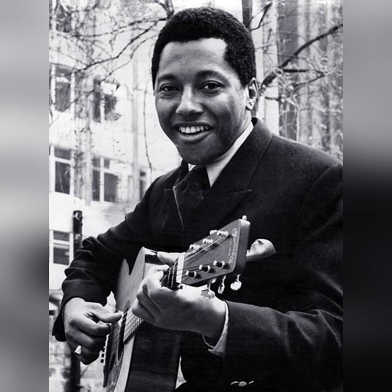

Music History

70s MUSIC GAVE BIRTH TO HIP-HOP:
Case 1 - Labi Siffre vs. Dr. Dre
I have mentioned on this site in my article about Grandmaster Flash that 70s music is of seminal influence to the birth of Hip-Hop in the Bronx, NY. Not only was Hip-Hop born out of the 70s, but also House music in Chicago, which was born out of similar methods of mixing music together to create a new sound.
As evidence of this notion that Hip-Hop wouldn’t have become what it was without the music of the 1970s, and that hip hop artists are indebted to the artists of the 1970s, I present to you my first case. Let’s proceed…
The average person unfortunately does not know who Mr. Labi Siffre is. Born in 1945 London as Claudius Afolabi "Labi" Siffre, he’s an intellectual, an activist, a talented musician, and a gifted writer of songs, essays, and poetry. Labi Siffre was active and prolific mainly in the 1970s, having released several albums in the first five years of the decade. After a long hiatus (or retirement as he called it), he released more albums from the end of the 1980s well into the late 1990s, but has since stopped releasing anymore original, full-length material.
Siffre’s music has influenced many artists who went on to cover and sample his work, including Olivia Newton-John, Kenny Rogers, Kanye West, Jay-Z, and Kelis. However, the most famous or even infamous of these samples was Dr. Dre’s sampling of the bass line from the second half of “I Got The...” that was the foundation of Eminem’s “My Name Is…”
According to Dr. Dre’s retelling of his collaboration with Eminem on the song, “My Name Is…”, Dr. Dre played the sample for Eminem upon arrival at his studio, and Eminem immediately began to interject, “Hi! My name is…my name is...” and Dr. Dre thought that shit was “hot!” Admittedly, it was, but Labi Siffre felt differently.
As an openly gay man, Labi Siffre was not too thrilled about the lyrical content of Eminem’s lyrics:
“Dissing the victims of bigotry – women as bitches, homosexuals as faggots – is lazy writing. Diss the bigots not their victims. I denied sample rights till that lazy writing was removed. I should have stipulated “all versions” but at that time knew little about rap’s “clean” & “explicit” modes, so they managed to get the lazy lyric on versions other than the single and first album.”
This is quite conflicting, because as lover of hip-hop and student of its history, I understand the importance of getting your hands on a sample that--if remixed, chopped, or screwed--could innovate and change the course of the genre, forever. However, Labi Siffre has every right to deny his creative work to be used by anyone he feels goes against his principles, or contributes to the oppression any group of underrepresented people face. Labi Siffre used much of his music to call out and denounce oppression, so in his view, why couldn’t Eminem and Dr. Dre do the same in their music?
I do think that musicians should have the right to discuss topics and explore issues in disjointed and peculiar ways that people would not otherwise consider. I enjoy when artists talk about taboo topics to expose the absurdity, or celebrate how openness improves avenues of communication. Not all music is created equal and not all contributes great things to the world, but it’s hard to say that if people aren’t using music in one specific way, they shouldn’t make it at all.
It’s safe to say that, without that sample, “My Name Is…” arguably wouldn’t have become the phenomenon it was at the end of the 90s and still is today. Sure, Eminem’s lyrical abilities are notable, but the way the sample carries the song gives it an edge that is so befitting, it’s hard to imagine it without it.
The use of intellectual property has been a debate ever since humans could commodify their creative work, which coincided with the onset of capitalism as a global economic system. I think that Labi Siffre deserves compensation and recognition for his work, and if that recognition comes in form of a hip-hop sample or several, as long as they don’t mock his craft, I’m all for it. I could not confirm royalties earned off of the song, but I’m going to assume it’s quite hefty, since the song did go double platinum.
Next »